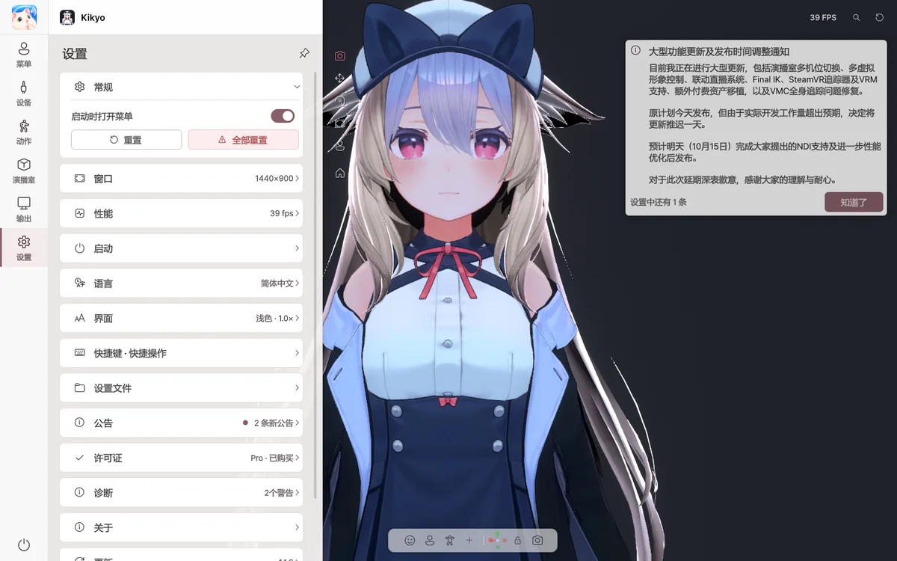

12. 故障排除
v2.0.0：按现象逐步排查

| 现象 | 排查步骤 |
|---|---|
| OBS 中没有 Spout2 Capture | 关闭 OBS → 安装官方 Spout2 插件 → 重启 OBS → 添加 Spout2 Capture；更改过发送名称时重新选择。 |
| OBS 中没有 NDI Source | 安装 DistroAV及需要的 NDI Runtime，重启 OBS，检查旧 OBS-NDI 是否冲突。NDI 支持 Basic。 |
| NDI 黑屏或找不到来源 | 检查 NDI 输出开关、两台 PC 网络、防火墙、NDI Tools Studio Monitor、源名称和 Alpha 设置；访客 Wi-Fi 设备隔离可能造成无法发现。 |
| Spout2 背景黑色 | 工作室选择透明，检查应用 Alpha 输出以及 OBS 接收端 Composite with alpha 等选项。 |
| 虚拟摄像机安装没反应 | 可能需要管理员权限。重启应用，检查 VirtualCamera/Install.bat，重新打开 Discord/Zoom 并选 Avatar Live Camera。 |
| 会话只能在同一局域网使用 | 检查房主服务器已开 → 版本 v2.0.0 → 默认 47700 → 路由器同时转发 TCP 和 UDP → Windows 防火墙 → 是否有公网 WAN 地址/CGNAT → 从不同网络测试。 |
| 远程角色被替代模型代替 | 检查发送者是否同意分享角色数据，模型使用条款是否允许；合法拥有相同 VRM 时可放入本地 Vrm 文件夹后重新查找。不要提取别人原始文件。 |
| 摄像机围绕角色意外旋转 | 阅读摄像机目标旋转与瞄准区别；锁定目标的位置旋转规则不是“始终看脸”，还需配置直视目标/画面构图。 |
| iPhone 已连接但面部不动 | 第一次有效面部数据约 3 秒后校准；检查真实追踪数据、AFK、断线恢复和来源重连。 |
| 摄像头手臂扭曲 | 比较旧版与动态方式，关闭实验性手部深度，重新调整过高的平滑。 |
| SteamVR 追踪器不对位 | 先确认 SteamVR 自身追踪，再重新绑定各身体部位并校准。 |
| 录制或多画面太卡 | 减少独立 Spout2、预览格子与刷新、体积光/HBAO、输出分辨率和 FPS，逐项比较。 |
仍不能解决时，在设置 → 诊断 → 发送错误报告填写复现步骤、设备、角色类型、程序版本（v2.0.0/v45）和最近调整的设置。更多连接说明在输出与远程会话。
无法解决的错误或问题，请通过 设置 › 诊断 › 发送错误报告 告诉我们；需要的功能或改进建议，请通过 设置 › 关于 › 发送改进建议 告诉我们。
启动 · 安装
| 症状 | 解决方法 |
|---|---|
| “Windows 已保护你的电脑”窗口 | 更多信息 → 仍要运行 |
| “Avatar Live 的文件已被更改” | 请使用从 BOOTH 下载的原始文件重新安装。角色和设置会保留。 |
| 无法正常启动 | 按住 Shift 运行，进行安全启动 |
角色
| 症状 | 解决方法 |
|---|---|
| 部分显示为粉色 | 确认能否正常上传到 VRChat 后重新导出 |
| 看不到角色 | 双击视图中的空白处 |
| 姿势僵住或头发缠在一起 | 顶部的 ⟲ |
| 听不到角色音效 | 不会播放角色音效。 |
摄像头 · 面部
| 症状 | 解决方法 |
|---|---|
| 摄像头无法开启 | 确认是否有其他应用正在使用摄像头 |
| 表情过小或过大 | 重新进行 自动面部设置，或使用 面部调整 |
| 角色看向侧面 | 正面校准 |
| 无法眨单眼 | 将眨眼模式设为 独立 |
| 电脑负担重 | 将追踪质量设为 均衡 或 节能 |
| 手 · 手指抖动 | 调高 设备 › 追踪来源 › 手部防抖 |
| 角色不动 | 在 设备 › 追踪来源 中确认部位的来源没有设为未使用的设备（如 VMC） |
| 通过 VMC 接收的姿势有偏差 | 在 VMC 设置 中点击 T 姿势 或 对齐 |
麦克风
| 症状 | 解决方法 |
|---|---|
| “无信号” | 在 Windows 设置 › 隐私 › 麦克风 中允许桌面应用访问 |
| 杂音让嘴巴动起来 | 检测背景噪声 |
| 嘴巴动得不够 | 语音校准 |
输出 · 屏幕共享
| 症状 | 解决方法 |
|---|---|
| OBS 中没有 Spout2 来源 | 在 OBS 中安装 Spout2 插件 |
| OBS 中背景显示为黑色 | 将背景设为 透明，并在 OBS 中选择 Composite with alpha |
| Discord 列表中没有 | 开启 屏幕共享 后，查看 应用程序 标签页 |
| 游戏显示为黑色 | 将游戏设为窗口模式 |
| 出现“Avatar Live Basic”字样 | 这是 Basic 的水印。Pro 中不会显示。 |
v1.1.5 常见问题
| 现象 | 处理方式 |
|---|---|
| 追踪中断后没有进入AFK姿势 | 检查动作 › 身体的等待和过渡时间，并确认已指定待机姿势 |
| iPhone镜像模式下眨眼左右相反 | 更新至v1.1.4及以上并检查镜像 |
| 仅用iPhone时手臂不能回到桌面 | 检查动作 › 手·桌面与手臂追踪来源；全身追踪需摄像头或VMC |
| 向前伸手时手臂抖动 | 关闭实验性的手部深度估算，检查摄像头校准 |
| 找不到某项设置 | 点击右上角放大镜搜索AFK、镜像、Spout2或语言 |
| 难以说明故障原因 | 使用设置 › 诊断 › 发送错误报告并附上复现步骤和日志 |
支持范围
| 内容 | |
|---|---|
| ✅ VRChat 角色 | Expression 菜单、动画器、PhysBone、Contact、Constraint、Eye Look、LipSync |
| ✅ 制作工具 | 使用 NDMF · Modular Avatar · VRCFury 的角色 |
| ✅ 着色器 | Poiyomi、lilToon 等 |
| ✅ 面部 | 遵循角色设置：VRCFaceTracking、52 个 ARKit 形态键（Perfect Sync）、MMD 眼部变形 |
| ✅ 追踪 | 摄像头（面部 · 手臂 · 手 · 手指）、iPhone（iFacialMocap · FaceMotion3D）、VMC（按部位：手臂 · 手 · 手指 · 身体 · 头部 · 眼睛） |
| 🧪 实验性功能 | Ultraleap、OSC、VMC 输出、舌头 · 脸颊的摄像头检测 |
| ⚠️ 不支持 | 角色音效、AudioLink、镜子检测、VRM 文件、Live2D、macOS · Linux |
摄像头（含全身 · 手指关节）、iPhone、VMC 输入已用实际设备确认。实验性功能预计可以正常运行，但尚未在开发者环境中使用所有设备和应用进行测试，因此在应用中标为 实验性。试用后如有问题，请通过 发送错误报告 告诉我们。
计划支持
- 加载 VRM 模型（.vrm，VRM 0.x / 1.0）并播放 .vrma 动画
- 强化 Perfect Sync：直接连接形态键的映射、按摄像头 · iPhone 分别进行的面部校准、逐一确认 52 种表情的工具
- 新增手机面部应用：VTube Studio（iPhone）、MeowFace（Android）
- 便利功能：重新导出角色后自动刷新、空闲时节省 FPS
※ 计划的功能和时间可能会有变更。
常见问题
需要 VRChat 账号吗？ 不需要。Avatar Live 不与 VRChat 通信。
可以用于直播吗？ 直播、公开发布视频和商业用途请使用 Pro。与朋友之间的非公开 Discord 共享，使用 Basic 也可以。
键盘输入会被记录吗？ 不会。桌面手部动作不会保存或发送输入的文字。
可以把角色文件给别人吗？ 请遵守角色和服装制作者的使用条款。